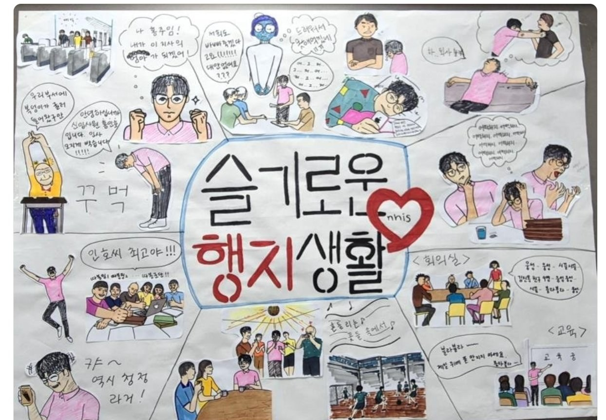
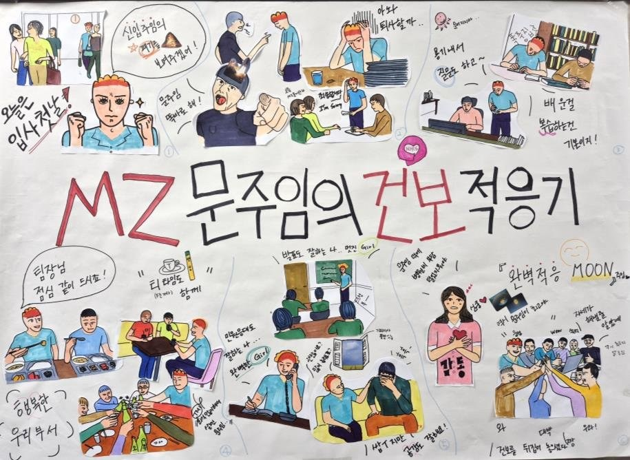
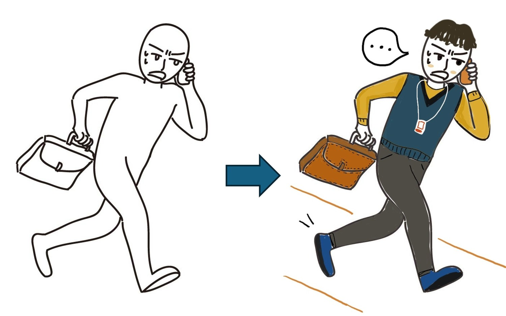
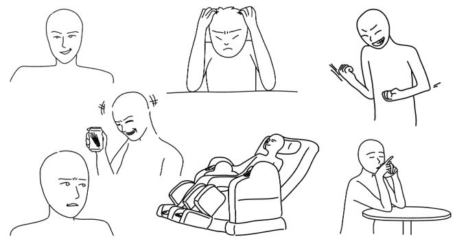
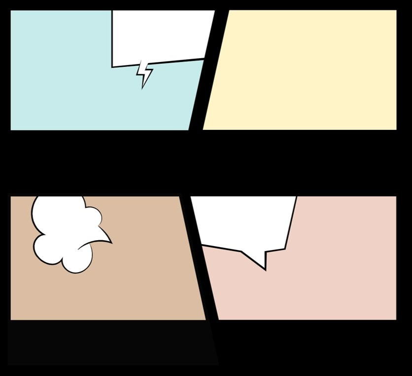
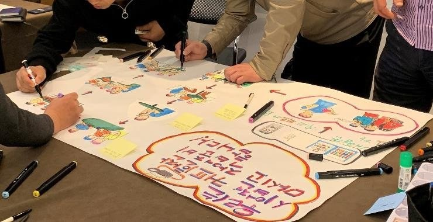
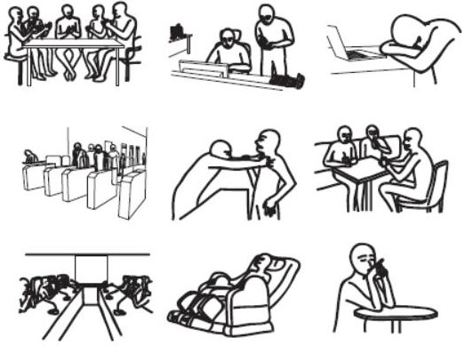
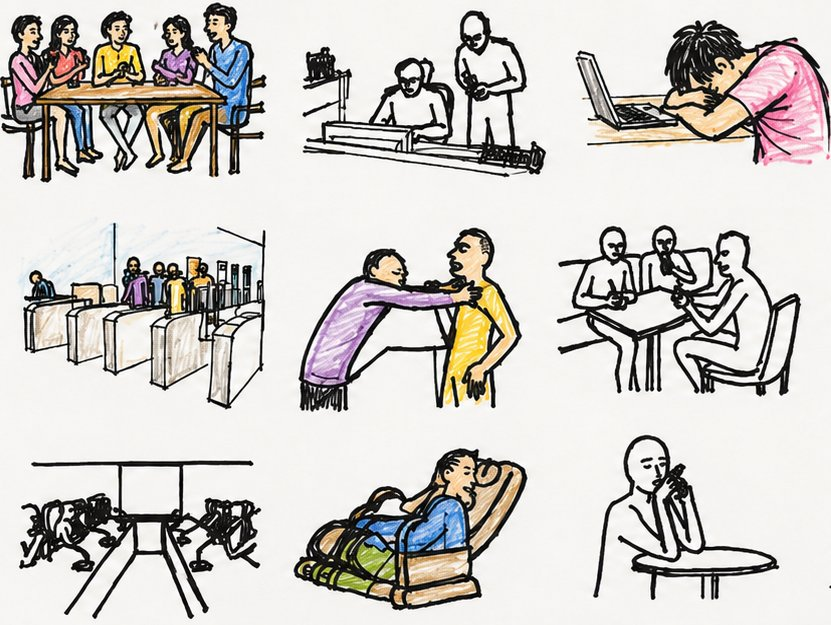
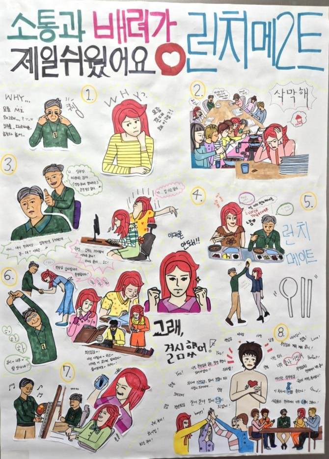

01
해석의 어려움
Interpretation'도전', '신뢰' 같은 추상어를 각자 다르게 해석합니다. 결국 같은 단어를 두고 다른 행동이 나옵니다.
조직의 핵심가치를 한 권의 웹툰으로 시각화하고, 공감과 실천을 끌어내는 워크숍 툴킷. 추상적 가치가 구체적 행동으로 연결됩니다. 핵심가치는 물론, '일하는 방식'·신입 온보딩·조직문화 등 어떤 주제와도 자연스럽게 어우러집니다.
설명보다 결과물이 먼저입니다. 그림 실력과 무관하게, 참가자들이 직접 만든 핵심가치 웹툰을 먼저 보세요. 어떤 프로그램인지는 그다음에 이야기하겠습니다.


↓ 그래서 이 워크숍이 무엇인지, 지금부터 알려드립니다.
'도전', '신뢰' 같은 추상어를 각자 다르게 해석합니다. 결국 같은 단어를 두고 다른 행동이 나옵니다.
경영진의 의도와 현장의 인식이 어긋납니다. "또 그 얘기"가 되어 메시지가 휘발됩니다.
교육은 끝났는데 일터에서는 변하지 않습니다. 가치와 행동 사이의 격차가 좁혀지지 않습니다.
핵심가치는 풍랑 속에서 방향을 알려주는 조직의 나침반입니다. 제대로 내재화되면 구성원이 일관된 행동을 하게 되어 성과로 이어집니다. 웹툰은 추상을 구체로, 텍스트를 시각으로, 일방향을 양방향으로 바꾸는 세 가지 흐름으로 그 내재화를 돕습니다.
이야기 형식이라 거부감이 적고, 한 번 보면 기억에 남습니다.
주인공의 갈등에 공감하며 가치의 맥락을 자기 일처럼 받아들입니다.
워크숍 활동으로 자신의 사례를 그리며, 보는 것에서 실천으로 넘어갑니다.
조직의 핵심가치와 실제 일터 맥락을 반영한 맞춤 시나리오 제작.
웹툰 컷·캐릭터·배경을 워크숍·교재·내부 채널에 재활용할 수 있는 자산으로 제공.
구성원이 댓글로 해석을 남기고 함께 의미를 만들어가는 소통 도구.
비전공자도 만들 수 있는 템플릿 ＋ 가이드로, 부서별 자체 제작이 가능합니다.
핵심가치를 바탕으로 '일하는 방식'으로 연계하거나, 주제를 바꿔 어떤 교육에도 맞춤 적용할 수 있습니다.
전사 차원의 핵심가치 내재화 교육. 한 권의 웹툰이 1년 짜리 캠페인이 됩니다.
그라운드 룰·일하는 방식을 사례로 풀어, 현장에 바로 적용할 행동 원칙으로 연결합니다.
신입사원이 조직 문화를 빠르게 습득하도록 돕는 양방향 입사 가이드.
조직 개편·신규 정책 도입 시, 메시지를 부드럽게 전하는 변화관리 도구.
제공된 툰 툴킷을 활용해 2~4개 컷 분량의 스토리를 조별 토의로 완성합니다. 시나리오 양식에 따라 세 단계로 진행하세요.
주인공과 등장인물(2~4명), 업무 또는 비즈니스 상황을 구체적으로 정합니다. 캐릭터명까지 설정하면 더 좋습니다.
주제에 맞게 2~4개 컷 분량으로 스토리를 작성합니다. 각 컷의 흐름이 자연스럽게 이어지도록 구성하세요.
마지막 컷에는 스토리의 결말 또는 정리하는 메시지, 결심, 기대효과 등을 담아 마무리합니다.
이미지 선택 TIP. 컷 스토리를 잘 표현할 수 있는 캐릭터나 장면을 제공된 툴킷에서 찾아 매칭하세요. 예를 들어 매출 달성을 위한 토의 장면이라면, 회의하는 인물과 그래프 배경을 골라 조합하면 됩니다.

웹툰 제작 경험이 없어도, 제공되는 웹툰툴킷을 활용하면 세 단계로 쉽게 완성할 수 있습니다.

스토리에 적합한 컷을 툴킷에서 찾아 매칭합니다.

선택한 컷을 배열하고 컷 분할·말풍선으로 레이아웃을 설정합니다.

인물·배경·디테일에 색을 입혀 한 편의 웹툰을 완성합니다.
툴킷은 아웃라인만 그려져 있어, 상상력과 창의력으로 남녀노소 다양한 캐릭터를 만들 수 있습니다. 네 가지만 기억하세요.
머리스타일과 의상으로 캐릭터를 표현합니다. 목·상반신은 라운드카라나 V넥으로, 허리선은 벨트나 상의선으로 구분하면 더 실감납니다.
상황이나 부연 설명은 매직 등으로 정확한 글씨를 써서 메시지를 전달합니다.
필요에 따라 배경 요소를 직접 그려 넣어 장면의 맥락을 풍부하게 만듭니다.
완성한 인물은 가위로 아웃라인을 따라 오려 작품에 붙입니다. 말풍선으로 혼잣말·대화·감정도 표현할 수 있습니다.


실제 워크숍에서 참가자들이 툴킷으로 완성한 핵심가치 웹툰입니다. 그림 실력과 무관하게 누구나 한 편의 이야기를 완성합니다.

대기업 현장직부터 신입사원 대규모 교육까지, 다양한 조직에서 핵심가치 내재화 웹툰 프로그램을 운영해 왔습니다.
내부 강사 육성 파일럿 → 리더급으로 확대 시행 · 총 3개월 과정 운영. 단위 조직별 그라운드 룰 사례를 발굴해 전사로 전파.
"비슷한 현장의 문제를 함께 해결해 나가는 과정이라 그룹 관리에 큰 도움이 됐습니다. 소통과 화합의 힘을 다시 느꼈어요."
약 500명 · 10개 반 분반 동시 진행 · 약 60개 사례를 바탕으로 핵심가치 웹툰 제작.
"어렵게만 느껴졌던 핵심가치를 직접 활동으로 풀어보니 재밌고 오래 기억될 것 같습니다. 조원들과 소통·배려를 직접 경험했어요."
핵심가치 이해부터 웹툰 제작, 작품 공유와 실천 다짐까지 3개 모듈로 진행됩니다. 핵심가치를 바탕으로 '일하는 방식' 등 다른 주제로 연계·변경하여 운영할 수도 있습니다.
| 모듈 | 주요 내용 | 시간 |
|---|---|---|
| Module 1 핵심가치와 사례 이해 |
우리 회사의 핵심가치에 대한 이해(핵심가치 소개와 사례 공유). 기업별 핵심가치에 맞춰 내용을 구성하고 맞춤화하여 진행합니다. | 강의 1H |
| Module 2 웹툰 제작 |
팀별 브레인스토밍으로 가치에 맞는 이야기를 구상하고, 장면 구성과 대사를 설계합니다. 웹툰툴킷으로 컷을 매칭·배열하고 채색하여 작품을 완성합니다. | 강의·실습 2H |
| Module 3 작품 공유 & 다짐 |
작품 상세 설명을 작성하고, 갤러리 워크로 조별 작품을 공유합니다. 핵심가치에 따른 행동 원칙과 실천 다짐을 함께 정리합니다. | 강의·실습 1H |
※ 핵심가치를 바탕으로 '일하는 방식'으로 연계하거나 주제를 변경하여 진행할 수 있습니다.
구성원이 핵심가치를 명확하게 이해하고, 그 중요성을 인식하게 됩니다.
핵심가치를 실천하는 행동을 일상 업무에서 자연스럽게 하도록 유도합니다.
핵심가치를 전사적으로 실천하는 문화를 형성하고, 조직 전체로 확산시킵니다.
샘플 시연과 맞춤 견적, 한 번에 받아보실 수 있습니다.